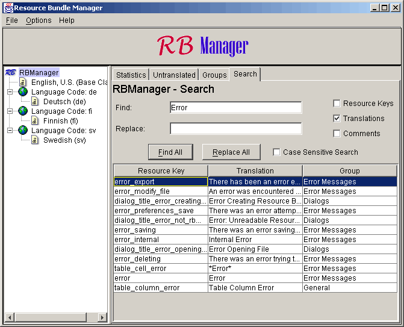

| General |
 |
| RB Manager |
|
| RB Reporter |
|
|
View 5. The Search Tab
The Groups tab view, like all tab views, looks and functions differently when working with the resource bundle as a whole than when working with an individual resource file. However, unlike the other tab views, the differences are minimal. Searching from the bundle performs the search on the base class and edits to the found resources affect the entire bundle. Searching from a resource file restricts the search to that file and the changes are also restricted to that resource file.
A screen shot of the Search tab view for the resource bundle is given below. The view for the individual resource files is nearly identical.

There are two basic functions to this view, Find All and Replace All. Find All takes the parameters given it and populates the result table with any matches found (note that the current version of RB Manager does not support wild card characters or regular expressions). The resulting table can be edited as in the other views by doubling clicking a row in the table.
Replace All works by first finding all of the resources in the same manner as Find All and then replacing the text that is found with the text given in the Replace text box. It is recommended that you first perform Find All before Replace All. The current version of RB Manager does an all or nothing replace. Future versions may allow step by step replacement.
Using the check boxes on the page, you can specify any combination of three parts of the resources to search: Resource Keys, Translations, and Comments. A fourth check box allows you to make the search case sensitive.
This view was introduced in version 0.3a of RB Manager.